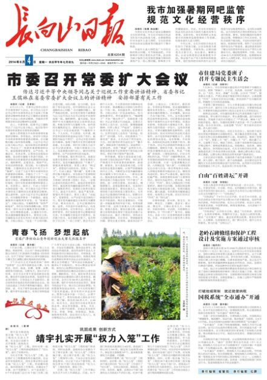
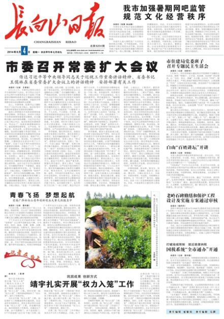

先插播一个广而告之：
博客首页显示不正常的问题已经解决。如今设置为：首页默认显示最近的50篇博文。
感谢热心读者“get freedom”提供的技术支持 :)
前几天发了一篇博文《八卦一下周永康那些破事儿——他的家族、朋党、生意、情妇（多图）》。有几个读者反馈说：那篇博文没有料，没有分析，只是新闻报道的堆砌。其实这几位读者有所不知——《八卦一下周永康那些破事儿》主要是面向那些不太关心政治的网友，通过罗列各种【靠谱的报道】，让他们体会到天朝有多么腐败。如此一来，就可以达到“抹黑党国的目的” :)
为啥俺特别强调【靠谱的报道】？因为对这类网友而言，小道消息他们不会相信。所以那篇博文中的示意图，每一幅都注明了，引用自国内的某某门户网站（新浪、网易、腾讯 等）；在介绍周永康情妇的时候，引用的报道要么是墙内门户网站（比如上海的东方网），要么是墙外知名媒体（比如《自由时报》）。如此一来，抹黑的效果才会好。反观某些海外的反共网站（俺就不点名了），为了抹黑，采用了大量捕风捉影的消息，只能起到反效果。
为了照顾那些热衷于政治八卦的同学，今天再发一篇——根据最近2个月真理部的异动，来分析朝廷高层的内斗。
在看正文之前，请先允许俺唠叨一下：不要被习包子的“反腐”蒙蔽了。所谓的“反腐”只不过是为了个人集权而进行的高层权力斗争。
在分析之前，先陈述事实——最近两个月，至少有3篇重量级的官方报道（都跟“反腐”有关），居然被中宣部（绰号“真理部”）全网封杀。
话说6月19日，中纪委公布了山西政协副主席令政策被双规的消息。令政策是何许人捏？他是前任大内总管（中央办公厅主任）令计划的亲哥哥。
隔天（6月20日），新华社的官方微博就发了一条短评，标题是《朝中有人也不灵》。这个标题的寓意很明显啦——所谓的“朝中有人”指的就是令政策的弟弟曾任大内总管。
这篇短评发出后，一些国内大型网站（中国新闻网、人民网、新浪网、腾讯网）也纷纷转载。谁曾想，该文发出一小时之后，就被删除了。然后所有的转载也都被删除了。很显然，真理部发出“全网封杀令”，才会导致所有的转载同时被删。虽然这篇短评已被河蟹，但网友早就截图（如下所示）：

为了证明此事不是俺瞎掰的，再附上《纽约时报》对此事的专题报道（链接在“这里”，需翻墙）。
在7月29日，朝廷高调宣布对周永康进行立案审查。当时俺还针对此事发了一篇《八卦一下周永康那些破事儿——他的家族、朋党、生意、情妇（多图）》。
隔天（7月30日），《人民日报》发了一篇网评，标题是《打掉“大老虎”周永康，不是反腐句号》。这个标题也很直白，意思就是说，除了周永康这个大老虎，还有其它（类似级别的）大老虎。此文发出后，也被很多国内的大型门户网站转载。
结果捏，这篇报道也遭遇了同样的命运——全网封杀——不光人民网的文章被删除，转载文章也被删除。为了证明此事不是俺瞎掰的，附上几个海外知名网站的报道（需翻墙）：
《中国官媒在“打掉周永康非反腐句号”上犹豫 @ BBC》
（根据 BBC 的报道，此次全网删除不彻底，少数转载“漏网”——没被河蟹掉）
《官媒指周永康不是“反腐句号”又悄然删文 习近平揪出“周老虎”就此收手？ @ 自由亚洲电台》
就在前几天（8月4日），吉林省的一份官方报纸《长白山日报》在头版头条报道了习近平6月26日的一次高层会议讲话。该文章在次日（8月5日）被很多国内网站转载，但是到了8月5日下午，该文章同样遭遇全网封杀。
（《长白山日报》头版的截图如下，可惜截图上的字太小，看不清）

下面是墙外知名网站对此事的报道（需翻墙）：
《习近平“生死论”遭删 @ 德国之声》
《反腐膠著狀態 習：個人生死毀譽無所謂 @ 香港南華早報》
这篇报道中提及：
先稍微总结一下，真理部这几次河蟹动作的共同点。
被封杀的都是官方控制的媒体（党国喉舌），尤其是前两次封杀的对象（“新华社”和“人民日报”），更加是喉舌中的喉舌。
被封杀的文章，都跟“反腐”有关。而且这几篇文章，都是在吹捧习包子的反腐决心。
封杀很彻底，用行话说就是“全网删除”。也就是说，不光原发网站要删除，所有墙内转载的网站也要删除。
对党国喉舌进行封杀，如果只发生一次，或许还可以称之为“巧合”。但是最近2个月连续发生3次。那就不仅仅是巧合了。
根据上述总结的这几个共同点，可以得出如下几个结论：
结论1
真理部在跟习包子唱反调
结论2
从结论1可以推出，习包子【无法】完全掌控真理部
结论3
真理部只不过是裆中央领导下的一个党务部门，居然有胆跟习包子唱反调，由此说明：真理部还有后台（接下来俺会分析后台是谁）。
在分析真理部的后台之前，先来看看这三次报道的最大亮点。
这三次报道，俺大致看了，个人认为最有看头的是第三次（也就是习包子的626讲话）。俺把626讲话中【最大的亮点】摘录如下（以下是习包子原话，摘自法广的“这篇报道”）：
从这短短的一段话里面，可以看出很多信息（尤其注意俺标了红色的那一句）。
1. 真实性如何？
习近平这段话会不会是他故意耸人听闻，夸大其辞？俺觉得不太可能。
因为中共非常在意“党的形象”（哪怕高层关系不好，至少也要维护“表面上的团结”）。如果派系之间的矛盾尚未白热化，习包子没有必要在高层会议上发出这样的言论。
2. 权斗的剧烈程度如何？
最近2年的反腐，肯定触及了很多其它派系高官的既得利益。这帮人当然不会束手待毙，“反弹”是必然的。
从上述讲话中可以看出——已经有人发出了公开威胁。到了这个地步，估计参与权斗的几个派系已经撕破脸，这是准备掀桌子的节奏啊。
3. 习近平的对手是谁？
目前的朝廷里面，有谁敢于公开发出这种赤果果的威胁？
比习近平资历浅的人（比如张高丽之流），显然不可能；比习近平资历深，但是缺乏政治实力的，显然也不可能（比如李瑞环之流）。
既有资历又有实力的，大概只有江泽民、胡锦涛、李鹏 等少数几家伙。而且以江泽民的嫌疑最大。为啥捏？下面俺会分析。
其实俺已经在博客上多次介绍过“真理部”了。不过考虑到某些新读者没有看过旧博文，还是稍微扫盲一下。
“真理部”的正式名称是“中共中央宣传部”，类别上算是“党务系统”，组织上直接隶属“裆中央”领导。天朝所有的传媒系统（电视、电台、报刊、书籍、网站 等）和所有的教育系统（从托儿所到大学）都归中宣部管辖。更多的介绍参见维基百科的“这个链接”。
目前真理部的部长是刘奇葆。此人在“十八大”之后才当上这个职务。十八大之前，他只是个“四川巡抚”（省委书记）。换句话说，他刚刚进入宣传系统不久（不到2年），在宣传系统中应该没啥根基。以他的资历来看，他没有胆量封杀那些吹捧习近平的文章。
如果不是刘奇葆，那会是谁捏？这时候咱们来看一下真理部的上级领导。在目前的政治局7常委中，负责分管宣传系统的常委是刘云山。此人在“18大”之前，先做了9年的“中宣部副部长”（1993-2002），然后又做了10年的“中宣部部长”（2002-2012）。在中宣部的领导岗位混了这么久，他应该有足够的机会在中宣部安插自己的亲信。所以，目前中宣部的实际控制人很可能是刘云山，而不是刘奇葆。
说到刘云山，顺便跟列位看官聊一下他有多么腐败。
他的宝贝儿子刘乐飞，历任如下职务：
中国人寿投资部总经理兼首席投资官（掌控5000亿保险资产的投资运作）
中信产业基金董事长兼首席执行官
中信证券副董事长
2011年《财富》杂志评选“亚洲最具影响力的25位商界领袖”，刘乐飞榜上有名（并且是上榜25人中最年轻的）。
（上述资料可不是俺瞎掰的，请看《刘云山高调谈马列，其子闷声发大财 @ 美国之音》）
按照惯例，俺来提几个反问句：难道你相信刘乐飞是商业奇才吗？如果他不是刘云山的儿子，他还能坐到如此高的职务吗？
顺便再说一个八卦：刘云山通过政治联姻，跟贾春旺（曾任国安部长、公安部长、最高人民检察院检察长）结成亲家——刘乐飞娶了贾春旺的女儿贾丽青。在当今朝廷中，类似的政治联姻还有很多，具体请看俺整理的《太子党关系网络》。
但是如果光凭刘云山自己的势力，他显然也不是习近平的对手——习近平不光是党务系统的一把手（党的总书记），还是军务系统的一把手（中央军委主席）。所以说，刘云山敢于封杀好几篇吹捧习近平的官媒文章，说明他还有后台。
在刘云山担任中宣部部长的那十年，分管宣传系统的政治局常委是李长春——此人是个典型的江派。到了18大换届的时候，刘云山接替的就是李长春的位置——分管宣传系统的常委。所以很显然，刘云山跟李长春一样，也是江泽民的亲信。为啥这么说捏？因为胡温执政那10年，老江的势力很强（比如江拖了2年才把军委主席让给胡）。如果刘云山不是江派的人，怎么可能在2002年选他当中宣部部长？另外，按照中共换届的惯例，前任官员对继任人选有很大的发言权。所以刘云山能接替李长春再次说明他所属的派系。
刚才俺提到了：党国大佬中，既有资历又有实力的，大概只有江泽民、胡锦涛、李鹏 等少数几人。在《为啥周永康案还不公布？另八卦一下后续大老虎的热门人选》一文中，俺已经分析了，李鹏肯定是反对近期的“反腐运动”的。因为反腐已经开始触及李鹏集团的利益（电力系统和三峡工程的腐败，都跟李鹏有关）。
至于胡锦涛的态度，似乎不太明朗。很多人以为胡面瘫会跟习包子联手，理由是胡长期被江压制。但是捏，情况未必如此。不信请看下面这篇报道：
《中国前领导人就反腐风险发出警告 @ 金融时报》
俺摘录其中一段：
自从2012年王立军私奔美领馆，之后的宫廷大戏就一直没停过。当初薄熙来被双开的时候，俺写了一篇《八卦一下薄熙来的净身出户——好戏还没完》，其中提到“下一个看点是周永康”。现在周永康被立案了，那下一个看点是啥捏？俺在4月份发了一篇《为啥周永康案还不公布？另八卦一下后续大老虎的热门人选》，里面提到几个已退休的常委（曾庆红、贺国强）是大老虎的热门候选。不过这几个人没那么容易搞定——想想看周永康只不过是排名最末尾的常委，从双规到公开宣布，居然拖了三个季度（2013-12-01到2014-7-29）。所以要查曾庆红、贺国强，耗时可能会更久。因此，近期的看点估计是接下来的“十八届四中全会”。有“未经证实的小道消息”说：习包子要在“四中全会”上进行摊牌。如果此消息可信的话，这出宫廷大戏就到高潮了 :) 反之，如果“四中全会”没啥动静，说明各方势力继续处于胶着状态。
俺博客上，和本文相关的帖子（需翻墙）：
八卦一下周永康那些破事儿——他的家族、朋党、生意、情妇（多图）
为啥周永康案还不公布？另八卦一下后续大老虎的热门人选
俺整理的《太子党关系网络》
看看全国人大代表都是啥货色——兼谈“议会道路的改良”行不通
习包子露馅——习近平在内的权贵家族如何转移巨额海外资产
博客首页显示不正常的问题已经解决。如今设置为：首页默认显示最近的50篇博文。
感谢热心读者“get freedom”提供的技术支持 :)
★引子
前几天发了一篇博文《八卦一下周永康那些破事儿——他的家族、朋党、生意、情妇（多图）》。有几个读者反馈说：那篇博文没有料，没有分析，只是新闻报道的堆砌。其实这几位读者有所不知——《八卦一下周永康那些破事儿》主要是面向那些不太关心政治的网友，通过罗列各种【靠谱的报道】，让他们体会到天朝有多么腐败。如此一来，就可以达到“抹黑党国的目的” :)
为啥俺特别强调【靠谱的报道】？因为对这类网友而言，小道消息他们不会相信。所以那篇博文中的示意图，每一幅都注明了，引用自国内的某某门户网站（新浪、网易、腾讯 等）；在介绍周永康情妇的时候，引用的报道要么是墙内门户网站（比如上海的东方网），要么是墙外知名媒体（比如《自由时报》）。如此一来，抹黑的效果才会好。反观某些海外的反共网站（俺就不点名了），为了抹黑，采用了大量捕风捉影的消息，只能起到反效果。
为了照顾那些热衷于政治八卦的同学，今天再发一篇——根据最近2个月真理部的异动，来分析朝廷高层的内斗。
在看正文之前，请先允许俺唠叨一下：不要被习包子的“反腐”蒙蔽了。所谓的“反腐”只不过是为了个人集权而进行的高层权力斗争。
★近期，官方反腐的报道多次被封杀
在分析之前，先陈述事实——最近两个月，至少有3篇重量级的官方报道（都跟“反腐”有关），居然被中宣部（绰号“真理部”）全网封杀。
◇新华社短评《朝中有人也不灵》，被全网封杀
话说6月19日，中纪委公布了山西政协副主席令政策被双规的消息。令政策是何许人捏？他是前任大内总管（中央办公厅主任）令计划的亲哥哥。
隔天（6月20日），新华社的官方微博就发了一条短评，标题是《朝中有人也不灵》。这个标题的寓意很明显啦——所谓的“朝中有人”指的就是令政策的弟弟曾任大内总管。
这篇短评发出后，一些国内大型网站（中国新闻网、人民网、新浪网、腾讯网）也纷纷转载。谁曾想，该文发出一小时之后，就被删除了。然后所有的转载也都被删除了。很显然，真理部发出“全网封杀令”，才会导致所有的转载同时被删。虽然这篇短评已被河蟹，但网友早就截图（如下所示）：
为了证明此事不是俺瞎掰的，再附上《纽约时报》对此事的专题报道（链接在“这里”，需翻墙）。
◇人民日报网评《打掉大老虎周永康，不是反腐句号》，被全网封杀
在7月29日，朝廷高调宣布对周永康进行立案审查。当时俺还针对此事发了一篇《八卦一下周永康那些破事儿——他的家族、朋党、生意、情妇（多图）》。
隔天（7月30日），《人民日报》发了一篇网评，标题是《打掉“大老虎”周永康，不是反腐句号》。这个标题也很直白，意思就是说，除了周永康这个大老虎，还有其它（类似级别的）大老虎。此文发出后，也被很多国内的大型门户网站转载。
结果捏，这篇报道也遭遇了同样的命运——全网封杀——不光人民网的文章被删除，转载文章也被删除。为了证明此事不是俺瞎掰的，附上几个海外知名网站的报道（需翻墙）：
《中国官媒在“打掉周永康非反腐句号”上犹豫 @ BBC》
（根据 BBC 的报道，此次全网删除不彻底，少数转载“漏网”——没被河蟹掉）
《官媒指周永康不是“反腐句号”又悄然删文 习近平揪出“周老虎”就此收手？ @ 自由亚洲电台》
◇《长白山日报》转载习近平的“626讲话”，被全网封杀
就在前几天（8月4日），吉林省的一份官方报纸《长白山日报》在头版头条报道了习近平6月26日的一次高层会议讲话。该文章在次日（8月5日）被很多国内网站转载，但是到了8月5日下午，该文章同样遭遇全网封杀。
（《长白山日报》头版的截图如下，可惜截图上的字太小，看不清）

下面是墙外知名网站对此事的报道（需翻墙）：
《习近平“生死论”遭删 @ 德国之声》
《反腐膠著狀態 習：個人生死毀譽無所謂 @ 香港南華早報》
这篇报道中提及：
習近平的這段講話此前並未被公開報道過，以至於白山市委機關報《長白山日報》昨日（8月4日）刊出報道後，引來各媒體爭相轉載。不過，截至記者發稿為止，絕大多數媒體已經將轉載報道刪除。而在《長白山日報》的官方網站上，該文章的鏈接亦已失效。
★这几次“河蟹行动”的共同点
先稍微总结一下，真理部这几次河蟹动作的共同点。
◇共同点1
被封杀的都是官方控制的媒体（党国喉舌），尤其是前两次封杀的对象（“新华社”和“人民日报”），更加是喉舌中的喉舌。
◇共同点2
被封杀的文章，都跟“反腐”有关。而且这几篇文章，都是在吹捧习包子的反腐决心。
◇共同点3
封杀很彻底，用行话说就是“全网删除”。也就是说，不光原发网站要删除，所有墙内转载的网站也要删除。
◇小结
对党国喉舌进行封杀，如果只发生一次，或许还可以称之为“巧合”。但是最近2个月连续发生3次。那就不仅仅是巧合了。
根据上述总结的这几个共同点，可以得出如下几个结论：
结论1
真理部在跟习包子唱反调
结论2
从结论1可以推出，习包子【无法】完全掌控真理部
结论3
真理部只不过是裆中央领导下的一个党务部门，居然有胆跟习包子唱反调，由此说明：真理部还有后台（接下来俺会分析后台是谁）。
★这三次报道的最大亮点
在分析真理部的后台之前，先来看看这三次报道的最大亮点。
这三次报道，俺大致看了，个人认为最有看头的是第三次（也就是习包子的626讲话）。俺把626讲话中【最大的亮点】摘录如下（以下是习包子原话，摘自法广的“这篇报道”）：
有人说十八大后我们抓了30多个副部以上干部，差不多了，可以收手了。这是一种错误认识，反腐不设名额，有多少抓多少。有人威胁说要我们走着瞧，我要正告他们，谁怕谁！
从这短短的一段话里面，可以看出很多信息（尤其注意俺标了红色的那一句）。
1. 真实性如何？
习近平这段话会不会是他故意耸人听闻，夸大其辞？俺觉得不太可能。
因为中共非常在意“党的形象”（哪怕高层关系不好，至少也要维护“表面上的团结”）。如果派系之间的矛盾尚未白热化，习包子没有必要在高层会议上发出这样的言论。
2. 权斗的剧烈程度如何？
最近2年的反腐，肯定触及了很多其它派系高官的既得利益。这帮人当然不会束手待毙，“反弹”是必然的。
从上述讲话中可以看出——已经有人发出了公开威胁。到了这个地步，估计参与权斗的几个派系已经撕破脸，这是准备掀桌子的节奏啊。
3. 习近平的对手是谁？
目前的朝廷里面，有谁敢于公开发出这种赤果果的威胁？
比习近平资历浅的人（比如张高丽之流），显然不可能；比习近平资历深，但是缺乏政治实力的，显然也不可能（比如李瑞环之流）。
既有资历又有实力的，大概只有江泽民、胡锦涛、李鹏 等少数几家伙。而且以江泽民的嫌疑最大。为啥捏？下面俺会分析。
★真理部的后台——刘云山
其实俺已经在博客上多次介绍过“真理部”了。不过考虑到某些新读者没有看过旧博文，还是稍微扫盲一下。
“真理部”的正式名称是“中共中央宣传部”，类别上算是“党务系统”，组织上直接隶属“裆中央”领导。天朝所有的传媒系统（电视、电台、报刊、书籍、网站 等）和所有的教育系统（从托儿所到大学）都归中宣部管辖。更多的介绍参见维基百科的“这个链接”。
目前真理部的部长是刘奇葆。此人在“十八大”之后才当上这个职务。十八大之前，他只是个“四川巡抚”（省委书记）。换句话说，他刚刚进入宣传系统不久（不到2年），在宣传系统中应该没啥根基。以他的资历来看，他没有胆量封杀那些吹捧习近平的文章。
如果不是刘奇葆，那会是谁捏？这时候咱们来看一下真理部的上级领导。在目前的政治局7常委中，负责分管宣传系统的常委是刘云山。此人在“18大”之前，先做了9年的“中宣部副部长”（1993-2002），然后又做了10年的“中宣部部长”（2002-2012）。在中宣部的领导岗位混了这么久，他应该有足够的机会在中宣部安插自己的亲信。所以，目前中宣部的实际控制人很可能是刘云山，而不是刘奇葆。
说到刘云山，顺便跟列位看官聊一下他有多么腐败。
他的宝贝儿子刘乐飞，历任如下职务：
中国人寿投资部总经理兼首席投资官（掌控5000亿保险资产的投资运作）
中信产业基金董事长兼首席执行官
中信证券副董事长
2011年《财富》杂志评选“亚洲最具影响力的25位商界领袖”，刘乐飞榜上有名（并且是上榜25人中最年轻的）。
（上述资料可不是俺瞎掰的，请看《刘云山高调谈马列，其子闷声发大财 @ 美国之音》）
按照惯例，俺来提几个反问句：难道你相信刘乐飞是商业奇才吗？如果他不是刘云山的儿子，他还能坐到如此高的职务吗？
顺便再说一个八卦：刘云山通过政治联姻，跟贾春旺（曾任国安部长、公安部长、最高人民检察院检察长）结成亲家——刘乐飞娶了贾春旺的女儿贾丽青。在当今朝廷中，类似的政治联姻还有很多，具体请看俺整理的《太子党关系网络》。
★刘云山的后台——江泽民
但是如果光凭刘云山自己的势力，他显然也不是习近平的对手——习近平不光是党务系统的一把手（党的总书记），还是军务系统的一把手（中央军委主席）。所以说，刘云山敢于封杀好几篇吹捧习近平的官媒文章，说明他还有后台。
在刘云山担任中宣部部长的那十年，分管宣传系统的政治局常委是李长春——此人是个典型的江派。到了18大换届的时候，刘云山接替的就是李长春的位置——分管宣传系统的常委。所以很显然，刘云山跟李长春一样，也是江泽民的亲信。为啥这么说捏？因为胡温执政那10年，老江的势力很强（比如江拖了2年才把军委主席让给胡）。如果刘云山不是江派的人，怎么可能在2002年选他当中宣部部长？另外，按照中共换届的惯例，前任官员对继任人选有很大的发言权。所以刘云山能接替李长春再次说明他所属的派系。
★其他党国大佬的态度如何？
刚才俺提到了：党国大佬中，既有资历又有实力的，大概只有江泽民、胡锦涛、李鹏 等少数几人。在《为啥周永康案还不公布？另八卦一下后续大老虎的热门人选》一文中，俺已经分析了，李鹏肯定是反对近期的“反腐运动”的。因为反腐已经开始触及李鹏集团的利益（电力系统和三峡工程的腐败，都跟李鹏有关）。
至于胡锦涛的态度，似乎不太明朗。很多人以为胡面瘫会跟习包子联手，理由是胡长期被江压制。但是捏，情况未必如此。不信请看下面这篇报道：
《中国前领导人就反腐风险发出警告 @ 金融时报》
俺摘录其中一段：
中国前国家主席江泽民敦促现领导层收控、放慢数十年来最严厉的反腐败运动。据三位知情人士透露，2003年卸任国家主席的江泽民，上月（编程随想注：此处指2014年3月）向现任国家主席习近平发出了明确的信号。江泽民发出信息称：这场反腐败运动的步伐不能搞得太快。此言意在警告习近平，不要对党内高层太多权贵家族或亲信网动手。综合各方的报道，习包子很可能需要同时对抗多个政治派系，其中最大的对手应该是江派。所以捏，后面应该还有不少好戏可以看 :)
参与执行反腐败的一名人士表示，一年前被习近平接替的前国家主席胡锦涛也对反腐败努力表达了保留意见，警告其继任者不要过分扩大反腐运动。
江泽民和胡锦涛认为这场反腐败运动已走得够远，进一步扩大可能伤到他们自己或各自派系的利益。他们担心，一场严厉而持久的反腐风暴可能削弱党内基层的支持，威胁中共统治的稳定。
★后续的看点
自从2012年王立军私奔美领馆，之后的宫廷大戏就一直没停过。当初薄熙来被双开的时候，俺写了一篇《八卦一下薄熙来的净身出户——好戏还没完》，其中提到“下一个看点是周永康”。现在周永康被立案了，那下一个看点是啥捏？俺在4月份发了一篇《为啥周永康案还不公布？另八卦一下后续大老虎的热门人选》，里面提到几个已退休的常委（曾庆红、贺国强）是大老虎的热门候选。不过这几个人没那么容易搞定——想想看周永康只不过是排名最末尾的常委，从双规到公开宣布，居然拖了三个季度（2013-12-01到2014-7-29）。所以要查曾庆红、贺国强，耗时可能会更久。因此，近期的看点估计是接下来的“十八届四中全会”。有“未经证实的小道消息”说：习包子要在“四中全会”上进行摊牌。如果此消息可信的话，这出宫廷大戏就到高潮了 :) 反之，如果“四中全会”没啥动静，说明各方势力继续处于胶着状态。
俺博客上，和本文相关的帖子（需翻墙）：
八卦一下周永康那些破事儿——他的家族、朋党、生意、情妇（多图）
为啥周永康案还不公布？另八卦一下后续大老虎的热门人选
俺整理的《太子党关系网络》
看看全国人大代表都是啥货色——兼谈“议会道路的改良”行不通
习包子露馅——习近平在内的权贵家族如何转移巨额海外资产
版权声明
本博客所有的原创文章，作者皆保留版权。转载必须包含本声明，保持本文完整，并以超链接形式注明作者编程随想和本文原始地址：
https://program-think.blogspot.com/2014/08/chinese-leaders-power-struggle.html
本博客所有的原创文章，作者皆保留版权。转载必须包含本声明，保持本文完整，并以超链接形式注明作者编程随想和本文原始地址：
https://program-think.blogspot.com/2014/08/chinese-leaders-power-struggle.html